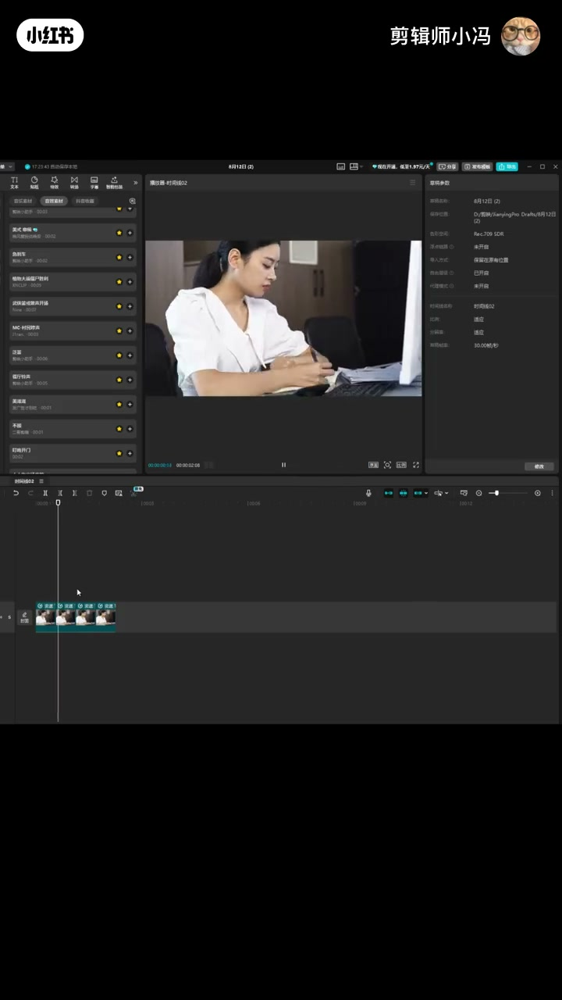
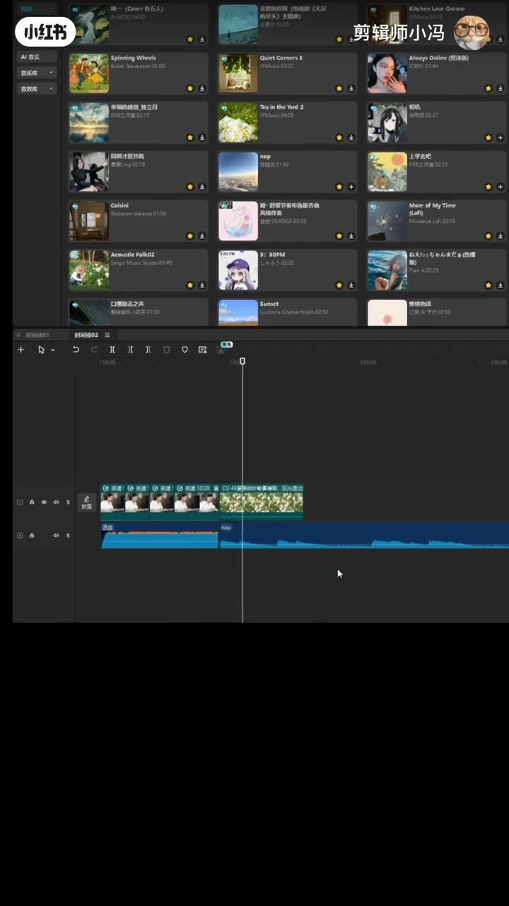
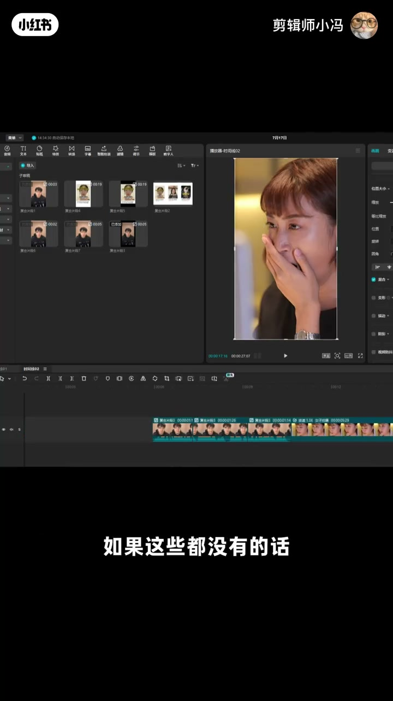

内容要点
剪辑师小冯认为 VLOG 最难剪，因为日常大多无聊，按时间线硬拼没人看。抽象感 VLOG 流行，但素材本身很平——解法收成三个可反复叠用的公式：素材越平 BGM 越燃；大小声与情绪反差并配怪音效转场；用定格「截丑图」把尴尬表情变成笑点。本质就两个字：反差。
知识结构
日常无聊+时间线拼接必死；抽象 VLOG 流行但素材平，给出三个方法。
平素材十倍速（太短就复制），上超燃/战斗 BGM，制造莫名其妙但不无聊。
燃曲大声后下一段必须小声、不要淡出要戛止；情绪表情反差；转场加放屁/木鱼/枪声。
定格截丑图（哈欠/喷嚏/眨眼翻白眼）+怪音效；三招可同片反复用。
抽象 VLOG 不是素材突然变有趣，而是用燃曲、音量/情绪骤变和截丑定格持续制造反差；三招可以在同一条里循环叠用，足够撑起一条「有人想看」的日常片。
00:00-00:19立题：日常无聊，抽象感 VLOG 给三个方法
小冯开场：VLOG 是所有类型里最难剪的，因为大部分日常都很无聊；只按时间线拼接一定没人看。抽象感 VLOG 虽流行，但很多单独素材仍然很平——于是给出三个把无聊变有趣的方法。
00:19-00:51公式一：素材越平，BGM 越燃
办公、吃饭这类没情绪、不跟镜头互动的画面：直接整段十倍速，太短就复制一两段。精髓是加非常燃的背景音乐，搜「战斗 BGM」「超燃 BGM」歌单即可。
效果是观众觉得莫名其妙、不知道你在干什么——但一定不会觉得无聊，目的就达到了。

00:51-01:24公式二：大小反差 + 转场怪音效
「大」与「小」：刚燃完、音乐很大，下一段音量必须小；不要给上一段加淡出，让声音戛然而止。综艺剧同理——上一秒开心，下一秒切疲惫难受表情，情绪反差让片子不平淡。
素材转场处可加放屁声、敲木鱼、枪声等音效，让切换更「丝滑」也更抽象。

01:24-02:03公式三：截丑图定格 + 可反复叠用
用定格功能生成静态图：无聊素材就拖时间轴找表情翻车（打喷嚏、打哈欠）；没有的话在眨眼处也能抠到翻白眼一帧，定格后再加莫名其妙音效。截太丑可先问对方能不能接受。
三个技巧能在同一条视频里反复用，完全够剪一条有趣 VLOG。片尾：「OK，散会。」

完整转录（74段）
以下文本由 Whisper medium 模型自动转录，可能存在少量识别误差，已尽可能修正。
我一直觉得vlog是所有类型中最难剪的
因为大部分的日常都很无聊
如果你只是按时间线拼接的话
那你这个vlog一定是没人想看的
所以现在是很流行抽象感vlog的
但问题来了
很多单独给的素材都很平
那我们剪辑时怎么把无聊素材变成有趣的vlog
就给大家三个方法
一素材越平
bgm越然
比如一段办公或者吃饭的画面
人物没有情绪
也不跟镜头互动
没有任何看点
那你直接整个十倍速
视频时长太短的话
直接复制一两个就行
然后精髓来了
加一段非常然的背景音乐
想不起来的话
直接往上搜
战斗bgm超然bgm
有很多整理好的歌单
这样就会让观众觉得莫名其妙
不知道你在谈什么
那他一定不会觉得无聊了
那咱的目的就达到了
二大小反差
这个大和小分别是啥意思呢
比如刚刚这段特别然的画面
音乐声很大
那下一段画面呢
音量就一定要小
也不需要给上一段音乐家
淡出的效果
就直接让这个声音
戛然而止
很多综艺或者电视剧
都有相同的效果
上一秒很开心
下面就切一个很累很难受的表情
这种前后的情绪反差
就会让整个视频变得不平淡
然后在素材转场的位置
可以加一个音效
比如放屁声
敲木鱼
枪声
这样的画面切换得更丝滑
三 结丑图
大家都用过定格功能吧
时间轴停在视频素材上
点一下定格
就会生成这一张画面的静态图
如果一段素材很无聊
我就会反复拖时间轴
看看有没有表情管理不好的地方
比如打喷嚏 打哈欠
如果这些都没有的话
那正常人都会眨眼的对吧
那在眨眼的地方反复拖时间轴
肯定可以找到翻白眼的一阵
我们直接定格就行
然后再加个莫名其妙的音效
那这段无聊的素材就变得好玩了
不过如果你节奏图太丑的话
可以先去问一下单独的意见
看看他们能不能接受
OK
这三个技巧是可以在同一个视频里反复用的
完全足够你可以剪一条有趣的VLOG
大家可以试试
OK 散会